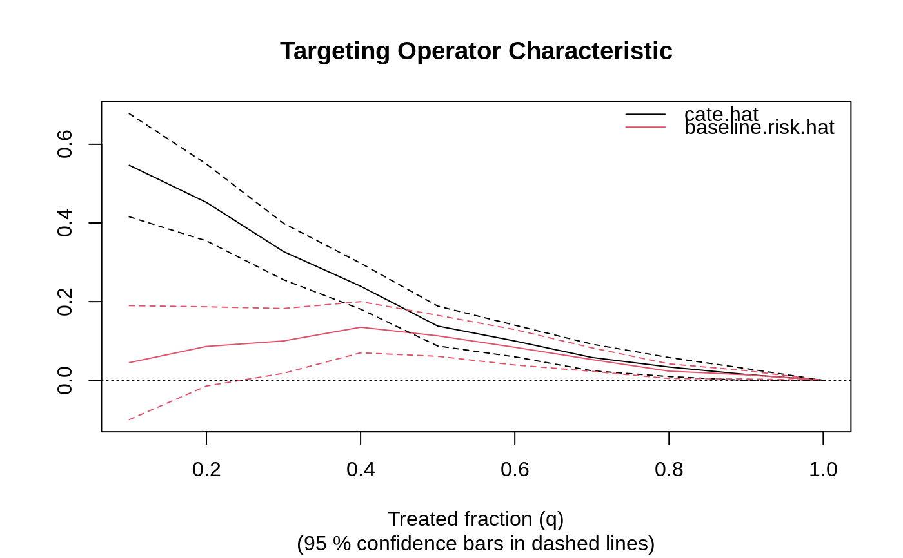

R/rank_average_treatment.R
rank_average_treatment_effect.RdConsider a rule \(S(X_i)\) assigning scores to units in decreasing order of treatment prioritization. In the case of a forest with binary treatment, we provide estimates of the following, where 1/n <= q <= 1 represents the fraction of treated units:
The Rank-Weighted Average Treatment Effect (RATE): \(\int_{0}^{1} alpha(q) TOC(q; S) dq\), where alpha is a weighting method corresponding to either `AUTOC` or `QINI`.
The Targeting Operator Characteristic (TOC): \(E[Y_i(1) - Y_i(0) | F(S(X_i)) \geq 1 - q] - E[Y_i(1) - Y_i(0)]\), where \(F(\cdot)\) is the distribution function of \(S(X_i)\).
The Targeting Operator Characteristic (TOC) is a curve comparing the benefit of treating only a certain fraction q of units (as prioritized by \(S(X_i)\)), to the overall average treatment effect. The Rank-Weighted Average Treatment Effect (RATE) is a weighted sum of this curve, and is a measure designed to identify prioritization rules that effectively targets treatment (and can thus be used to test for the presence of heterogeneous treatment effects).
rank_average_treatment_effect( forest, priorities, target = c("AUTOC", "QINI"), q = seq(0.1, 1, by = 0.1), R = 200, subset = NULL, debiasing.weights = NULL, compliance.score = NULL, num.trees.for.weights = 500 )
| forest | The evaluation set forest. |
|---|---|
| priorities | Treatment prioritization scores S(Xi) for the units used to train the evaluation forest. Two prioritization rules can be compared by supplying a two-column array or named list of priorities (yielding paired standard errors that account for the correlation between RATE metrics estimated on the same evaluation data). WARNING: for valid statistical performance, these scores should be constructed independently from the evaluation forest training data. |
| target | The type of RATE estimate, options are "AUTOC" (exhibits greater power when only a small subset of the population experience nontrivial heterogeneous treatment effects) or "QINI" (exhibits greater power when the entire population experience diffuse or substantial heterogeneous treatment effects). Default is "AUTOC". |
| q | The grid q to compute the TOC curve on. Default is (10%, 20%, ..., 100%). |
| R | Number of bootstrap replicates for SEs. Default is 200. |
| subset | Specifies subset of the training examples over which we estimate the RATE. WARNING: For valid statistical performance, the subset should be defined only using features Xi, not using the treatment Wi or the outcome Yi. |
| debiasing.weights | A vector of length n (or the subset length) of debiasing weights. If NULL (default) these are obtained via the appropriate doubly robust score construction, e.g., in the case of causal_forests with a binary treatment, they are obtained via inverse-propensity weighting. |
| compliance.score | Only used with instrumental forests. An estimate of the causal effect of Z on W, i.e., Delta(X) = E[W | X, Z = 1] - E[W | X, Z = 0], which can then be used to produce debiasing.weights. If not provided, this is estimated via an auxiliary causal forest. |
| num.trees.for.weights | In some cases (e.g., with causal forests with a continuous treatment), we need to train auxiliary forests to learn debiasing weights. This is the number of trees used for this task. Note: this argument is only used when debiasing.weights = NULL. |
A list of class `rank_average_treatment_effect` with elements
estimate: the RATE estimate.
std.err: bootstrapped standard error of RATE.
target: the type of estimate.
TOC: a data.frame with the Targeting Operator Characteristic curve estimated on grid q, along with bootstrapped SEs.
Yadlowsky, Steve, Scott Fleming, Nigam Shah, Emma Brunskill, and Stefan Wager. "Evaluating Treatment Prioritization Rules via Rank-Weighted Average Treatment Effects." arXiv preprint arXiv:2111.07966, 2021.
rank_average_treatment_effect.fit for computing a RATE with user-supplied
doubly robust scores.
# \donttest{ # Simulate a simple medical example with a binary outcome and heterogeneous treatment effects. # We're imagining that the treatment W decreases the risk of getting a stroke for some units, # while having no effect on the other units (those with X1 < 0). n <- 2000 p <- 5 X <- matrix(rnorm(n * p), n, p) W <- rbinom(n, 1, 0.5) stroke.probability <- 1 / (1 + exp(2 * (pmax(2 * X[, 1], 0) * W - X[, 2]))) Y.stroke <- rbinom(n, 1, stroke.probability) # We'll label the outcome Y such that "large" values are "good" to make interpretation easier. # With Y=1 ("no stroke") and Y=0 ("stroke"), then an average treatment effect, # E[Y(1) - Y(0)] = P[Y(1) = 1] - P[Y(0) = 1], quantifies the counterfactual risk difference # of being stroke-free with treatment over being stroke-free without treatment. # This will be positive if the treatment decreases the risk of getting a stroke. Y <- 1 - Y.stroke # Train a CATE estimator on a training set. train <- sample(1:n, n / 2) cf.cate <- causal_forest(X[train, ], Y[train], W[train]) # Predict treatment effects on a held-out test set. test <- -train cate.hat <- predict(cf.cate, X[test, ])$predictions # Next, use the RATE metric to assess heterogeneity. # Fit an evaluation forest for estimating the RATE. cf.eval <- causal_forest(X[test, ], Y[test], W[test]) # Form a doubly robust RATE estimate on the held-out test set. rate <- rank_average_treatment_effect(cf.eval, cate.hat) # Plot the Targeting Operator Characteristic (TOC) curve. # In this example, the ATE among the units with high predicted CATEs # is substantially larger than the overall ATE. plot(rate)# Get an estimate of the area under the TOC (AUTOC). rate#> estimate std.err target #> 0.2312721 0.02205734 priorities | AUTOC# Construct a 95% CI for the AUTOC. # A significant result suggests that there are HTEs and that the CATE-based prioritization rule # is effective at stratifying the sample. # A non-significant result would suggest that either there are no HTEs # or that the treatment prioritization rule does not predict them effectively. rate$estimate + 1.96*c(-1, 1)*rate$std.err#> [1] 0.1880397 0.2745045# In some applications, we may be interested in other ways to target treatment. # One example is baseline risk. In our example, we could estimate the probability of getting # a stroke in the absence of treatment, and then use this as a non-causal heuristic # to prioritize individuals with a high baseline risk. # The hope would be that patients with a high predicted risk of getting a stroke, # also have a high treatment effect. # We can use the RATE metric to evaluate this treatment prioritization rule. # First, fit a baseline risk model on the training set control group (W=0). train.control <- train[W[train] == 0] rf.risk <- regression_forest(X[train.control, ], Y.stroke[train.control]) # Then, on the test set, predict the baseline risk of getting a stroke. baseline.risk.hat <- predict(rf.risk, X[test, ])$predictions # Use RATE to compare CATE and risk-based prioritization rules. rate.diff <- rank_average_treatment_effect(cf.eval, cbind(cate.hat, baseline.risk.hat)) plot(rate.diff)
# Construct a 95 % CI for the AUTOC and the difference in AUTOC. rate.diff$estimate + data.frame(lower = -1.96 * rate.diff$std.err, upper = 1.96 * rate.diff$std.err, row.names = rate.diff$target)#> lower upper #> cate.hat | AUTOC 0.18875892 0.2737852 #> baseline.risk.hat | AUTOC 0.02119898 0.1132241 #> cate.hat - baseline.risk.hat | AUTOC 0.10829080 0.2198303# }